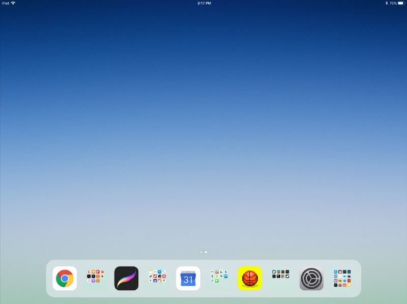
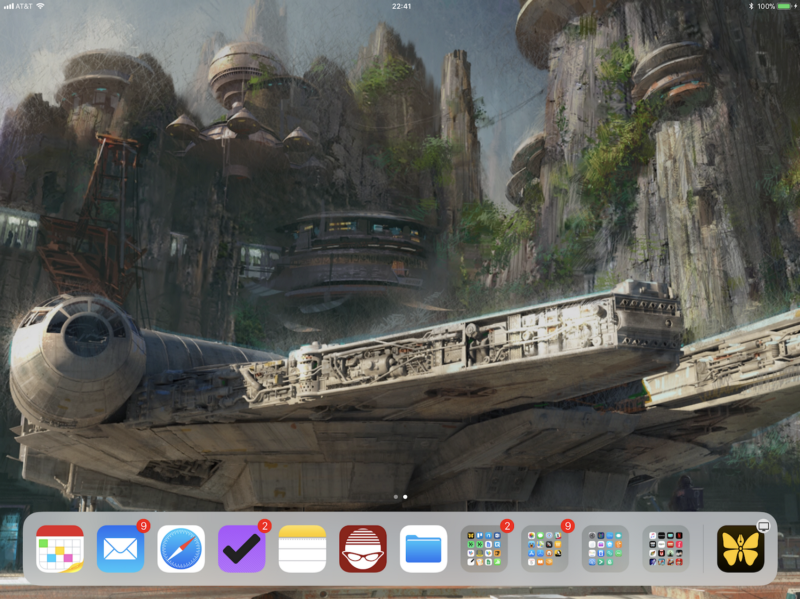
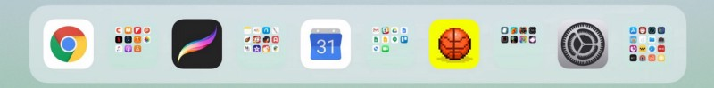

Optimizing the iPad Home Screen For iOS 11 Multitasking

It’s been a while since I wrote about using an iPad as a laptop replacement. Since then iOS 11 was released, which introduced completely new multitasking capabilities, bringing iPads even closer to having a full computing experience.
In order to open two apps simultaneously on an iPad in iOS 11, you need to drag apps out of the dock (which now works a lot more similarly to the dock in macOS). Here’s an example of what it looks like:

iPad multitasking in action (from the Washington Post)
It takes a little while to get used to, but it’s intuitive enough after a while. Probably the biggest issue is that you’ll need to have the app in the dock if you want to multitask with it. Well, it’s possible to drag an app from the home screen instead of the dock, but it’s a lot more clumsy involving some unintuitive multi-touching gymnastics.
David Sparks outlined an interesting solution to this problem — don’t have any apps on the home screen, instead keep all your apps in the dock. This seems like a crazy idea, but it’s actually not too hard to do it since you can keep folders in the dock. This is what his home screen looks like:

David Sparks’ iPad home screen (from macsparky.com)
As strange as this may seem, it’s actually really not hard to organize all your apps into a couple of key folders. The four folders in his dock are Make, Learn, Fix, and Play (which he has always used to organize his apps on the home screen). The rest of the apps are the ones he uses most frequently.
This is a pretty elegant approach which makes it easy to access any app for split screen (and makes every app easier to access in general). One downside is that the folders don’t have labels in the dock. It’s an unfortunate byproduct of the minimal aesthetic that dominates today’s user interfaces (research shows that icons should always have text labels to improve usability). For David Sparks, this probably isn’t a big deal, since he has always organized his apps into those four folders and is accustomed to them. For someone who is organizing their apps this way for the first time, not having folder labels in the dock is a suboptimal user experience to say the least.
My solution to this was to use the same technique as David (no apps on the home screen, all apps in the dock with folders), with my dock arranged such that each folder is adjacent to my most used app in that category. Here’s what my dock looks like at the moment:

My apps are organized into similar categories: Consume, Create, Work, Play, and Utilities. For each category, I put my most used app to the left of the folder: Chrome for Consume, Procreate for Create, Google Calendar for Work, Bouncy Hoops for Play, and Settings for Utilities. These icons are easy enough for me to recognize, which makes it easy to quickly locate the folder for any app. You can think of it as using my most used apps as labels for each folder.
This particular optimization may become unnecessary if iOS adds the option to have app and folder labels in the dock, or makes it more intuitive to use split screen with apps that aren’t in the dock. But for now, it makes my iPad a lot more usable for multitasking, and having every app in the dock makes it easier to access everything in general. I don’t imagine I’ll be changing this dock setup anytime soon, regardless of newer options that may come. Hope you find these tips to be useful!